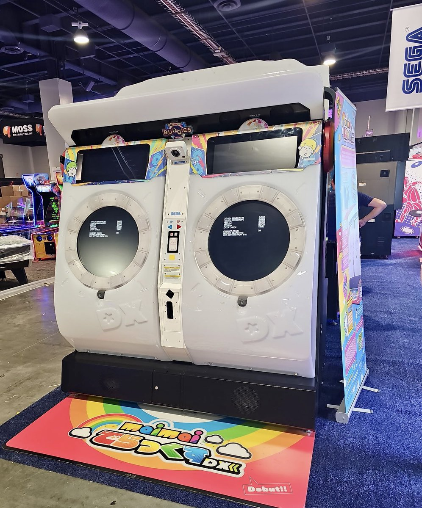

小虚空🍥
@tokerumaisurii
@y1kaah 甚至除此之外每两年还有强制的$2,000升级维护费……

Ikigai Arcade
@IKIGAI_ARCADE
#maimaiDX update time!
Sega provided a correction/clarification regarding something they stated yesterday.
- 31k price includes 2 years of updates
- After the first 2 years it is $2000 per year to keep the cab online.
We do have a few questions pending answers however. Stay https://t.co/Zg8D07U9TE
怡卡啦
@y1kaah
完了3万美金 https://t.co/OFwpQjzrNp https://t.co/tk6vVoscdE